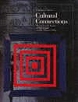
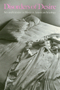
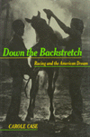
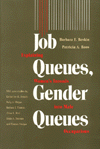
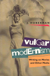

|
|
Abortion
Rights as Religious Freedom
Wenz, Peter S.
Wenz argues that the Supreme Court reached the right decision in
Roe v. Wade but for the wrong reasons
344 pp • Fall 1991
paper 0-87722-858-2
EAN 978-0-87722-858-5
cloth 0-87722-857-4
EAN 978-0-87722-857-8
|
|
|
Antifoundationalism
Old and New
Rockmore, Tom, and Beth J. Singer, eds.
Essays that follow and expound on the foundationalism/antifoundationalism
debate throughout the history of philosophy
253 pp • Fall 1991
cloth 0-87722-881-7
EAN 978-0-87722-881-3
|
|
|
The
Baltimore Book
New Views of Local History
Fee, Elizabeth, Linda Shopes, and Linda Zeidman, eds.
A tour guide to places in the city that are important to labor,
African Americans, and women's history
256 pp • Fall 1991
cloth 0-87722-817-5
EAN 978-0-87722-817-2
|
|
Citizen
Lawmakers
The Ballot Initiative Revolution
Schmidt, David D.
The stories of the individual activists and political groups that
revitalized this use of Initiative and Referendum
New in Paperback!
352 pp • Spring 1989
paper 0-87722-903-1
EAN 978-0-87722-903-2
|
|
|
Cocaine
Changes
The Experience of Using and Quitting
Waldorf, Dan, Craig Reinarman, and Sheigla Murphy
Over 200 in-depth interviews with heavy users document the dangers
of cocaine, but the authors contend that the national hysteria over
it is largely unfounded
336 pp • 5.5x8.25 • Fall 1991
cloth 0-87722-863-9
EAN 978-0-87722-863-9
|
|
|
Confronting
the Margaret Mead Legacy
Scholarship, Empire, and the South Pacific
Foerstel, Lenora, and Angela Gilliam, eds.
A multicultural outlook scrutinizing Mead's impact on Western anthropology
309 pp • Fall 1991
cloth 0-87722-886-8
EAN 978-0-87722-886-8
|
| 
|
Cultural
Connections
Museums and Libraries of the Delaware Valley
Vogel, Morris J.
A guide to the rich cultural institutions of the Philadelphia area
256 pp • Fall 1991
cloth 0-87722-840-X
EAN 978-0-87722-840-0
|
|
|
Dishing
It Out
Power and Resistance Among Waitresses in a New Jersey Restaurant
Paules, Greta Foff
Challenges the uncritical equation of advancement with success
225 pp • 5.5x8.25 • Fall 1991
paper 0-87722-888-4
EAN 978-0-87722-888-2
cloth 0-87722-887-6
EAN 978-0-87722-887-5
|
| 
|
Disorders
of Desire
Sex and Gender in Modern American Sexology
Irvine, Janice M.
The first book to examine the development and impact of sexology
in the United States
New in Paperback!
272 pp • Spring 1990
paper 0-87722-898-1
EAN 978-0-87722-898-1
|
|
|
Domesticity
and Dirt
Housewives and Domestic Servants in the United States, 1920-1945
Palmer, Phyllis
Examining the cultual norms of women after Suffrage to define labor
based on color
New in Paperback!
248 pp • Fall 1989
paper 0-87722-901-5
EAN 978-0-87722-901-8
|
| 
|
Down
the Backstretch
Racing and the American Dream
Case, Carole
The culture of horseracing from behind the scenes
224 pp • Fall 1991
cloth 0-87722-846-9
EAN 978-0-87722-846-2
|
| 
|
Elements
of Ethics
Moore, G. E., and Tom Regan, eds.
Ten previously unpublished lectures showing Moore's position regarding
ethics in relation to conduct in earlier work differs from the one
presented in Principia
272 pp • Fall 1991
cloth 0-87722-770-5
EAN 978-0-87722-770-0
|
|
|
Engineering
Culture
Control and Commitment in a High-Tech Corporation
Kunda, Gideon
An analysis of corporate culture from the inside
288 pp • 6x9 • Fall 1991
paper 1-56639-075-3
EAN 978-1-56639-075-0
cloth 0-87722-845-0
EAN 978-0-87722-845-5
|
|
|
Explorations
on the Edge of Time
The Prospects for World Order
Falk, Richard
Envisioning the future through grassroots globalism
256 pp • Fall 1991
cloth 0-87722-860-4
EAN 978-0-87722-860-8
|
|
|
Faith,
Reason, and Skepticism
Hester, Marcus, ed.
Original essays provide a dialogue between four of the most distinguished
scholars now working on problems of faith, reason, and skepticism
192 pp • Fall 1991
cloth 0-87722-853-1
EAN 978-0-87722-853-0
|
|
|
The
Forms of Power
From Domination to Transformation
Wartenberg, Thomas E.
A field theory of power that rejects many of the reigning assumptions
made about power
New in Paperback!
320 pp • Fall 1989
paper 0-87722-905-8
EAN 978-0-87722-905-6
|
|
|
Going
Down to the Barrio
Homeboys and Homegirls in Change
Moore, Joan
An examination of the changes and continuities among three generations
of barrio gangs
200 pp • Fall 1991
paper 0-87722-855-8
EAN 978-0-87722-855-4
cloth 0-87722-854-X
EAN 978-0-87722-854-7
|
|
|
Identity
Politics
Lesbian Feminism and the Limits of Community
Phelan, Shane
Tracing the uneasy relationship of lesbian-feminism with the Women's
Movement and gay rights groups
New in Paperback!
256 pp • Fall 1989
paper 0-87722-902-3
EAN 978-0-87722-902-5
|
|
|
Interpreting
Wittgenstein
A Cloud of Philosophy, a Drop of Grammar
Suter, Ronald
A highly accessible account of the thought of Wittgenstein
New in Paperback!
320 pp • Fall 1989
paper 0-87722-904-X
EAN 978-0-87722-904-9
|
|
|
Inventing
Vietnam
The War in Film and Television
Anderegg, Michael, ed.
Testimony of the unique relationship between the U.S.-Vietnam War
and the images and sounds that have been employed to represent it
295 pp • 5.5x8.25 • Fall 1991
paper 0-87722-862-0
EAN 978-0-87722-862-2
cloth 0-87722-861-2
EAN 978-0-87722-861-5
|
|
|
Irrationalism
Lukacs and the Marxist View of Reason
Rockmore, Tom
First English edition of a strictly philosophical discussion of
Georg Lukács's Marxist phase
288 pp • Fall 1991
cloth 0-87722-867-1
EAN 978-0-87722-867-7
|
| 
|
Job
Queues, Gender Queues
Explaining Women's Inroads into Male Occupations
Reskin, Barbara F., and Patricia A. Roos
A controversial interpretation of women's dramatic inroads into
several male occupations
New in Paperback!
388 pp • 6x9 • Fall 1990
paper 0-87722-744-6
EAN 978-0-87722-744-1
|
|
|
Justice,
Law, and Violence
Brady, James B., and Newton Garver, eds.
Philosophers examine the role of violence in modem society, particularly
its relation to justice
368 pp • Fall 1991
cloth 0-87722-843-4
EAN 978-0-87722-843-1
|
|
|
Life
After Death
Widows in Pennsylvania, 1750-1850
Wilson, Lisa
The experiences of widows in a society that imposed an ideology
of proper female behavior
192 pp • Fall 1991
cloth 0-87722-883-3
EAN 978-0-87722-883-7
|
|
|
The
Male Nude in Contemporary Photography
Davis, Melody D.
A unique study of the interrelation between social perceptions
of the male nude and the medium of photography
208 pp • 7x10 • Fall 1991
cloth 0-87722-839-6
EAN 978-0-87722-839-4
|
|
|
Moral
Responsibility and Persons
Schlossberger, Eugene
Argues that we are responsible not so much for what we do as for
who we are
244 pp • Fall 1991
cloth 0-87722-879-5
EAN 978-0-87722-879-0
|
|
|
No
Longer Patient
Feminist Ethics and Health Care
Sherwin, Susan
The first comprehensive handling of feminist bioethics
280 pp • Fall 1991
cloth 0-87722-889-2
EAN 978-0-87722-889-9
|
|
|
The
Passage of Nature
Emmet, Dorothy
The idea of "process" as a key concept in describing
what goes on in the world
208 pp • Fall 1991
cloth 0-87722-896-5
EAN 978-0-87722-896-7
|
|
|
Philadelphia
Neighborhoods, Division, and Conflict in a Post-Industrial City
Adams, Carolyn, David Bartelt, David Elesh, Ira Goldstein, Nancy Kleniewski,
and William Yancey
The city's history told on its own terms
224 pp • 6x9 • Fall 1991
paper 1-56639-078-8
EAN 978-1-56639-078-1
cloth 0-87722-842-6
EAN 978-0-87722-842-4
|
|
|
Policing
as Though People Matter
Guyot, Dorothy
What makes a good police department?
New in Paperback!
448 pp • Fall 1990
paper 0-87722-766-7
EAN 978-0-87722-766-3
|
|
|
Policy
and Politics in Canada
Institutionalized Ambivalence
Tuohy, Carolyn J.
A comparative perspective on the distinctive feature of the Canadian
policy process enabling conflict resolution
352 pp • Fall 1991
paper 0-87722-871-X
EAN 978-0-87722-871-4
cloth 0-87722-870-1
EAN 978-0-87722-870-7
|
|
|
The
Poverty of American Politics
A Theoretical Interpretation
Roelofs, H. Mark
This classic analysis challenges America's complacency about its
political system
368 pp • 6x9 • Fall 1991
paper 0-87722-878-7
EAN 978-0-87722-878-3
cloth 0-87722-877-9
EAN 978-0-87722-877-6
|
|
|
The
Reconquest of Montreal
Language Policy and Social Change in a Bilingual City
Levine, Marc V.
An examination of the nature of the linguistic transformation of
Montreal and the role of public policy in promoting it
New in Paperback!
320 pp • Spring 1990
paper 0-87722-899-X
EAN 978-0-87722-899-8
|
|
|
Religion
and Economic Justice
Zweig, Michael, ed.
Original essays by distinguished contributors from economics, religious
ethics, and biblical studies
272 pp • 6x9 • Fall 1991
cloth 0-87722-847-7
EAN 978-0-87722-847-9
|
|
|
The
Religious Challenge to the State
Moen, Matthew C., and Lowell S. Gustafson, eds.
Essays that examine how Islam, Christianity, and Judaism interact
with 20th-century state systems
320 pp • Fall 1991
cloth 0-87722-856-6
EAN 978-0-87722-856-1
|
|
|
The
Roots of Thinking
Sheets-Johnstone, Maxine
A ground-breaking interdisciplinary study about conceptual origins
linking hominid thinking with hominid evolution
New in Paperback!
408 pp • Fall 1990
paper 0-87722-769-1
EAN 978-0-87722-769-4
|
|
|
Schooling
Without Labels
Parents, Educators, and Inclusive Education
Biklen, Douglas
How people who have been labeled "disabled" might become
full participants in different areas of society
210 pp • Fall 1991
paper 0-87722-876-0
EAN 978-0-87722-876-9
cloth 0-87722-875-2
EAN 978-0-87722-875-2
|
| |
Scott Nearing
An Intellectual Biography
Saltmarsh, John A.
Vividly portrays the contours of Nearing's cultural criticism 210
pp • Fall 1991
cloth 0-87722-844-2
EAN 978-0-87722-844-8
|
|
|
Social
Inequality in Oaxaca
A History of Resistance and Change
Murphy, Arthur D., Alex Stepick, and Henry A. Selby
Two millennia of social inequality
300 pp • Fall 1991
cloth 0-87722-868-X
EAN 978-0-87722-868-4
|
|
|
Solidarity
and the Politics of Anti-Politics
Opposition and Reform in Poland since 1968
Ost, David
An analysis of Solidarity from it origins in the Polish "new
left" to the union's resurgence in 1988-89
New in Paperback!
272 pp • Fall 1989
paper 0-87722-900-7
EAN 978-0-87722-900-1
|
|
|
Studies
in Philosophy for Children
Harry Stottlemeier's Discovery
Sharp, Ann Margaret, and Ronald Reed, eds.
A collection of essays that reflects upon the development, refinement,
and maturation of Philosophy for Children
268 pp • Fall 1991
paper 0-87722-873-6
EAN 978-0-87722-873-8
cloth 0-87722-872-8
EAN 978-0-87722-872-1
|
| |
Swing City
Newark Nightlife, 1925-50
Kukla, Barbara J.
The undocumented entertainment mecca of Newark, NJ during the Jazz
Age and Swing Era
288 pp • Fall 1991
cloth 0-87722-874-4
EAN 978-0-87722-874-5
|
|
|
Toxic
Work
Women Workers at GTE Lenkurt
Fox, Steve
A compelling exposé of six years of legal and medical investigation
into the lives of workers at GTE
192 pp • Fall 1991
paper 0-87722-895-7
EAN 978-0-87722-895-0
cloth 0-87722-816-7
EAN 978-0-87722-816-5
|
|
|
The
Transformation of American Catholic Sisters
Qui�onez, Lora Ann, and Mary Daniel Turner
A report on the social, political, and spiritual changes for Catholic
nuns in the U.S. since Vatican II
224 pp • Fall 1991
paper 1-56639-074-5
EAN 978-1-56639-074-3
cloth 0-87722-865-5
EAN 978-0-87722-865-3
|
|
|
Transforming
Knowledge
Minnich, Elizabeth Kamarck
Examining the heritage and errors of a scholastic tradition that
considered the Euro-American male the norm and ideal for humankind
New in Paperback!
210 pp • 6x9 • Spring 1990
paper 0-87722-880-9
EAN 978-0-87722-880-6
|
|
|
Two
Paths Toward Peace
Child, James W., and Donald Scherer
An advocate of minimum justified violence and a pacifist engage
in a dialogue about the uses and abuses of violence
271 pp • Fall 1991
cloth 0-87722-882-5
EAN 978-0-87722-882-0
|
|
|
The
Urgings of Conscience
A Theory of Punishment
Adler, Jacob
To what extent does a guilty person have a duty to submit to punishment?
316 pp • 6x9 • Fall 1991
cloth 0-87722-826-4
EAN 978-0-87722-826-4
|
| 
|
Vulgar
Modernism
Writing on Movies and Other Media
Hoberman, J.
A witty collection of film criticism, including movie reviews,
longer essays, and film-festival reports of the '80s
300 pp • Fall 1991
paper 0-87722-866-3
EAN 978-0-87722-866-0
cloth 0-87722-864-7
EAN 978-0-87722-864-6
|
|
|
Wash
and Be Healed
The Water-Cure Movement and Women’s Health
Cayleff, Susan E.
An exploration of the relationship between hydrotherapy and the
women who took the cure
New in Paperback!
257 pp • Spring 1987
paper 0-87722-859-0
EAN 978-0-87722-859-2
|
|
|
We
Make the Road by Walking
Conversations on Education and Social Change
Horton, Myles, Paulo Freire, Brenda Bell, John Gaventa, and John Peters
Two pioneers of education discuss their diverse experiences and
ideas.
New in Paperback!
296 pp • 5.5x8.25 • Fall 1990
paper 0-87722-775-6
EAN 978-0-87722-775-5
|
|
|
Women
and Gender
A Feminist Psychology
Unger, Rhoda, and Mary Crawford
A comprehensive survey of the psychology of women establishes the
importance of having a separate field of inquiry for female psychology
549 pp • Fall 1991
cloth 0-87722-897-3
EAN 978-0-87722-897-4
|
|
|
Women
Between Two Worlds
Midlife Reflections on Work and Family
Dinnerstein, Myra
An in-depth study traces the experiences of 22 middle-class women
and their evolution from traditional wives and mothers to career
women
210 pp • Fall 1992
paper 0-87722-885-X
EAN 978-0-87722-885-1
cloth 0-87722-884-1
EAN 978-0-87722-884-4
|
|
|
The
World of Kate Roberts
Selected Stories, 1925-1981
Clancy, Joseph P.
The life and fiction of a modern Welsh writer
400 pp • Fall 1991
paper 0-87722-795-0
EAN 978-0-87722-795-3
cloth 0-87722-794-2
EAN 978-0-87722-794-6
|
| 
|
You
Are My Darling Zita
Busch, Glenn
Six people, all born around 1900, reflect on the changes in their
lives as old age comes upon them
304 pp • Fall 1991
cloth 0-87722-791-8
EAN 978-0-87722-791-5
|